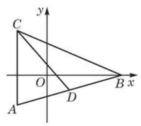
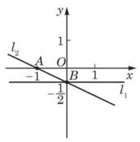
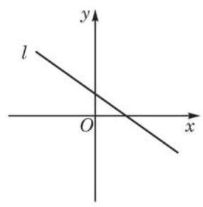
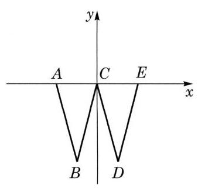

例题 1例 1 求倾斜角是 且在 轴上的截距是 -3 的直线 的点斜式方程. 教材 L205–206答案与解析收起 / 展开解 因为 在 轴上的截距是 -3,所以 经过点 . 因为 的斜率 ,所以 的点斜式方程是 . 教材 L207–208
例题 2例 2 已知直线 在 轴、 轴上的截距分别为 -2、 4, 求直线 的方程,并判断点 是否在直线 上. 教材 L209–210答案与解析收起 / 展开解 因为 在 轴上的截距是 4 且斜率 存在,所以可设 的方程为 . 又因为 经过点 ,所以 , 解得 . 所以, 的方程为 . 因为 ,所以点 不在直线 上. 教材 L211–216
例题 3例 3 已知直线 经过点 ,求 的方程.  图 1-2-3 教材 L257–262答案与解析收起 / 展开解 直接把点 的坐标代入直线的两点式方程,得 化简, 的方程可写为 . 教材 L263–270
例题 4例 4 如图 1-2-3, 三个顶点的坐标分别为 . 分别求边 所在直线的方程与边 上的中线 所在直线的方程. 教材 L271–272答案与解析收起 / 展开解 因为点 与点 的横坐标相等,所以 所在直线与 轴垂直,从而边 所在直线的方程为 . 设点 的坐标为 ,则 所以, 点 的坐标为 . 又因为点 的坐标为 ,所以 所在直线的两点式方程是 ,化简,得 . 所以， 中边 上的中线 所在直线的方程为 教材 L273–280
例题 5例 5 已知直线 与 轴、 轴分别交于 两个不同的点且 ,其中 是坐标原点; 又点 在直线 上. 求直线 的方程. 教材 L281–282答案与解析收起 / 展开解 设 两点的坐标分别为 . 因为 ,所以 且 . 当 时,直线 的方程为 ,即 . 因为点 在直线 上,所以 ,得 . 所以,直线 的方程为 . 同理,当 时,可得直线 的方程为 . 所以,直线 的方程为 或 . 教材 L283–292
练习1.2(2) · 3 在平面直角坐标系中, 是坐标原点. 已知 两点的坐标分别为 、 ,分别求 的三条边上的中线所在直线的方程. 教材 L299–300答案与解析收起 / 展开 边 与 的中线所在直线的方程分别为 与 . 教参 L586–587
例题 6例 6 在平面直角坐标系中, 根据所给直线方程, 作出相应图形,并求出该直线的斜率和在 轴上的截距: (1) ； (2) .  图 1-2-4 教材 L315–324答案与解析收起 / 展开解 (1) 因为 ,所以该直线过点 且平行于 轴 (图 1-2-4). 所以, 的斜率为 0 且在 轴上的截距是 . (2)在方程 中，令 ，得 ；令 ， 得 . 这就得到直线 上两个不同的点 , 连接 两点的直线即为直线 (图 1-2-4). 因为方程 可化为 ,所以直线 的斜率是 ,在 轴上的截距是 . 教材 L325–330
例题 7例 7 已知直线 的方程为 ,求证: 无论 取何值时,直线 都经过一个定点,并写出该定点的坐标. 教材 L331–332答案与解析收起 / 展开解 由 ,变形得 . 这是直线 的点斜式方程, 是 的斜率,点 是 经过的定点. 所以，无论 取何值时，直线 都经过一个定点，该定点的坐标为 .  图 1-2-5 教材 L333–340
例题 8例 8 如图 1-2-5,直线 经过平面直角坐标系的第一、第二与第四象限. 求实数 的取值范围. 教材 L341–342答案与解析收起 / 展开解 当 时,直线 的方程为 ,它只经过第二、 第三象限,不符题意,所以 . 于是,直线 的方程可化为 因为直线 经过第一、第二与第四象限,所以其斜率小于 0, 且在 轴上的截距大于 0,则 解得 或 . 所以,实数 的取值范围是 . 教材 L343–358
练习1.2(3) · 1 求下列方程所表示直线的斜率与倾斜角: (1) ； (2) ； (3) ； (4) . 教材 L361–366答案与解析收起 / 展开 (1)斜率不存在,倾斜角为 . (2)斜率为 -1,倾斜角为 . (3)斜率为 ,倾斜角为 . (4)斜率为 0 ,倾斜角为 0 . 教参 L590–593
例题 9例 9 已知点 与 是直线 ( 不同时为零) 上任意两点,且向量 . 求证: 向量 与 垂直. 教材 L371–372答案与解析收起 / 展开证明 因为点 与 在直线 上,所以 且 . 两式相减,得 ,即 ,所以向量 与 垂直. 教材 L373–374
例题 10例10 已知 的三个顶点的坐标分别是 、 与 ,求边 上的高 所在直线的方程. 教材 L389–390答案与解析收起 / 展开解 因为 ,所以向量 是 所在直线的一个法向量; 又因为直线 经过点 ,所以 所在直线的点法式方程是 . 化简,得 的高 所在直线的方程为 . 教材 L391–394
例题 11例 11 已知直线 经过点 ，且 是它的一个法向量. 若 与坐标轴围成的三角形的面积是 2,求实数 的值. 教材 L395–396答案与解析收起 / 展开解 根据条件写出直线 的点法式方程 化简为 如果 或 ,直线 与 轴或 轴平行,这样的直线无法与坐标轴围成三角形,所以 且 . 在上述方程中分别令 与 等于零,求得直线 在 轴与 轴上的截距分别是 与 . 所以, 与坐标轴围成的三角形的面积为 解得 或 . 如果 是直线 的一个法向量, 那么,只要 是非零实数, 也是 的法向量. 教材 L397–424
练习1.2(4) · 1 写出下列直线的一个法向量: (1) ； (2) ； (3) ； (4) . 教材 L427–434答案与解析收起 / 展开 (1) . (2) . 案不唯一) 教参 L600–601
练习1.2(4) · 3 根据下列条件,求直线 的方程: (1) 在 轴上的截距为 -1，且 的一个法向量是 ； (2) 经过点 ，且 上的任何向量都与向量 平行. 教材 L437–442答案与解析收起 / 展开 (1) (2) . 教参 L604–605
习题1.2A · 3 求下列直线的斜率与在 两坐标轴上的截距: (1) ；___ (2) . 教材 L451–456答案与解析收起 / 展开 ( 1 ) 的斜率为 ,在 轴上的截距为 ,在 轴上的截距为 . (2) 的斜率为 -3,在 轴上的截距为 ,在 轴上的截距为 . 教参 L614–617
习题1.2A · 4 已知直线 经过点 . (1)求 的倾斜角的大小； (2)求 在 轴上的截距. 教材 L457–462答案与解析收起 / 展开 (1) -arctan 5 . (2) . 教参 L618–619
习题1.2A · 6 根据给定条件,求下列直线的两点式方程: (1)直线 经过点 、 ； (2)直线 与坐标轴的交点分别为 . 教材 L465–470答案与解析收起 / 展开 (1) ,即 . (2) ,即 . 教参 L622–623
习题1.2A · 7 已知 的三个顶点的坐标分别为 . (1)求边 所在直线的方程； (2)求边 上的中线所在直线的方程. 教材 L471–476答案与解析收起 / 展开 (1) . (2) . 教参 L624–625
习题1.2A · 9 一个弹簧在弹性限度内挂 的物体时弹簧长度为 ,挂 物体时弹簧长度为 . 已知在弹性限度内所挂物体的质量 (单位: ) 与弹簧长度 (单位: ) 的关系可以用直线的方程表示，求该直线的方程，并求弹簧自身的长度. 教材 L479–480答案与解析收起 / 展开 ,弹簧自身长度为 . 教参 L628–629
习题1.2A · 10 在平面直角坐标系中, 作出下列直线, 并求它们的斜率与倾斜角. (1) (2) 教材 L481–486答案与解析收起 / 展开10.(1)斜率为 3,倾斜角为 . (2)斜率为 ,倾斜角为 . 教参 L630–633
习题1.2A · 11 设直线 的方程是 ，在下列条件下，求实数 、 、 满足的条件: (1) 与 轴、 轴均相交； (2) 经过第二、第三、第四象限. 教材 L487–492答案与解析收起 / 展开 (1) . (2) 且 (即 、 、 同号) 教参 L634–635
习题1.2A · 12 已知直线 ，根据下列条件，求实数 的值: (1) 经过点 ； (2) 在两个坐标轴上的截距相等. 教材 L493–498答案与解析收起 / 展开 (1) . (2) . 教参 L636–637
习题1.2B · 3 直线 与线段 相交，其中点 为 ，点 为 . (1)当 时，求 的取值范围; (2)当 时，求 的取值范围. 教材 L509–514答案与解析收起 / 展开 (1) . (2) . 教参 L648–649
习题1.2B · 4 已知 中，两个顶点的坐标分别为 、 ，点 是此三角形的重心. 求边 所在直线的方程. 教材 L515–516答案与解析收起 / 展开 边 所在直线的方程分别为 . 教参 L650–651
习题1.2B · 6 如图是一个 形的霓虹灯 (灯管宽度忽略不计),每边长都是 , 每相邻两边相交所成的锐角都是 . 试建立适当的平面直角坐标系, 写出此霓虹灯的每条边所在直线在这个坐标系中的方程. (第 6 题) 教材 L523–524 · 教材 L519–521答案与解析收起 / 展开 如图 1-R2,以 为坐标原点,以经过 的直线为 轴, 的方向为 轴的正方向,过点 且垂直于 的直线为 轴,则 所在直线的方程分别为 . 本题答案不唯一,因为可以选择不同的坐标系, 从而会有不同的方程.  图 1- R2 教参 L654–659
习题1.2B · 8 已知直线 . (1)若直线的斜率 ，求实数 的取值范围； (2)求证:对任意实数 ，直线 都经过一个定点. 教材 L527–532答案与解析收起 / 展开 (1) . (2)证明略(过定点 . 教参 L662–663
习题1.2B · 9 已知向量 是直线 的一个法向量，在下列条件下求直线 的方程: (1)在 轴、 轴上的截距之和为 4 ； (2)与 轴、 轴围成的三角形面积为 20. 教材 L533–538答案与解析收起 / 展开如,(1) (2) 或 . 教参 L664–665
习题1.2B · 11 我们把与直线上任意两点构成的向量均平行的非零向量称为该直线的方向向量. 求经过点 且以 为方向向量的直线的方程. 教材 L541–542答案与解析收起 / 展开 . 教参 L668–669